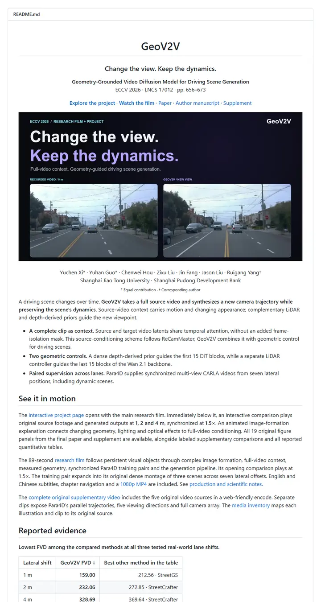

Xiyuche/GeoV2V
A film-festival one-sheet set in GitHub type: a tagline under the title, one dark poster still, and the credits rolling beneath it.

Checked against the rendered page. Theme 'both' rests on the self-contained dark poster; only the light theme was captured. No badges, so the palette is sampled from the teaser JPEG.
Why it is here
Plain text in the README itself carries an editorial header (name, tagline, citation line, link row) and a film-poster style teaser, and a compact evidence table and materials table show restraint without any badges.
Overview
Header Block
Badge Colors
Section Outline
Guidelines
More like this

adobe-research/obj-and-mat-selection
A conference proceedings page with its own table of contents: bold names on a centred line, a small ACM SIGGRAPH seal, six slim tags, and a grid of watermelon and kitchen shots washed in teal where the model chose.

Chuan-10/AGILE
A lab bench under bright light: a five-letter name, a strip of heavy uppercase tags, then a contact sheet of hands gripping scissors, mugs and controllers.

coral-lab-asu/CRAFT
A tool manual with a conference ribbon: one centred title, a long strip of emoji-tagged badges, a dotted link bar, then a three-row table that explains the whole method before the first install line.

damon-demon/SpanUQ
A command-line tool's manual with a conference stamp: a bracketed headline, four small colored tabs, a dotted jump bar, and numbers before the first paragraph ends.

deepmancer/HairPort
A paper laid out as a press kit: a row of loud capital-letter tags, a dated bulletin, and numbered figures that each carry a caption like a journal page, all separated by thick grey rules.

donaldssh/K-Merge
A conference title slide pinned to a white wall: one centred heading, a quiet credit block, a short strip of grey-and-color tags, then a pastel block diagram that tells the story before a word of prose.